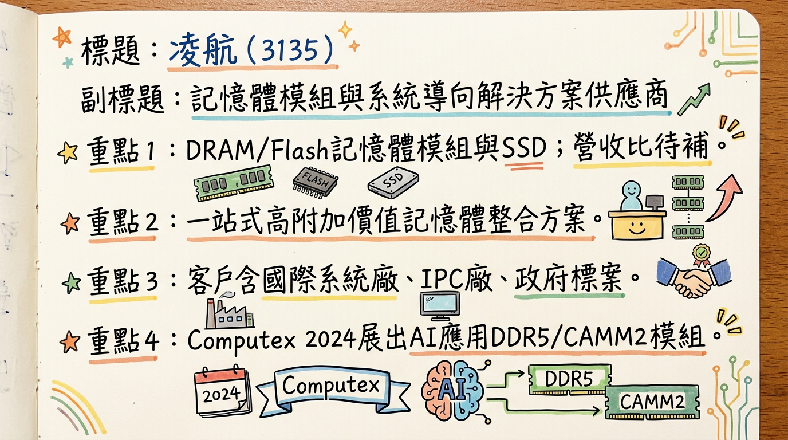
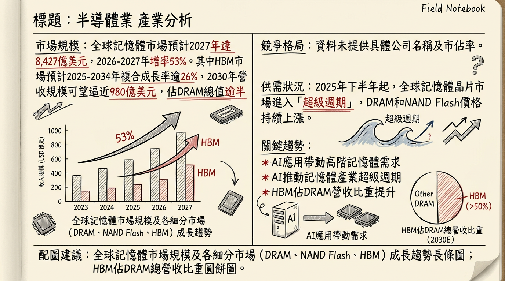

凌航（3135）受惠於全球AI應用引領記憶體進入超級循環，憑藉其DDR5高階模組與工控利基市場的深耕，營收屢創新高，產品組合優化效益顯現，法人預期2026年獲利將大幅成長，毛利率有望維持雙位數水準，展望樂觀但需留意短期股價過熱風險。
凌航科技（3135）是一家以系統導向記憶體解決方案為核心的供應商，主要從事記憶體模組的設計、生產與製造，並提供「一站式記憶體整合解決方案」。公司採取自有品牌（Goldkey、Neo Forza）、ODM代工及系統整合三軌並行策略，客戶涵蓋國際系統廠、國內IPC廠以及政府標案。
核心產品與服務：| 類別 | 項目 | 佔比 (最新) | 展望 (2026年) |
|---|---|---|---|
| 產品類別 | 記憶體模組 (DRAM) | 約 68.36% (截至2025年Q1) | DDR5提升至約 70% |
| Flash快閃記憶體 | 約 31.00% (截至2025年Q1) | - | |
| 應用類別 | 系統整合與標案 | 約 47% (2024年數據) | - |
| 電競及品牌市場 | 約 46% (2024年數據) | - | |
| 工控應用 | 約 7% (2024年數據) | 提升至 10% 至 20% |
凌航近年營收表現亮眼，特別是2025年底至2026年初，連續創下歷史新高。
| 月份 | 營收 (新台幣億元) | 月增率 MoM (%) | 年增率 YoY (%) |
|---|---|---|---|
| 2026年1月 | 15.46 | 31.5 | 343.9 |
| 2025年12月 | 11.76 | 56.4 | 119.7 |
| 2025年11月 | 7.52 | 18.7 | 30.2 |
| 2025年10月 | 6.33 | -20.1 | 9.6 |
| 2025年9月 | 7.93 | 46.6 | 30.7 |
| 2025年8月 | 5.41 | -16.3 | 22.1 |
* 營收：19.8022 億元 (創歷史新高)。
* 毛利率、營業利益率、稅後淨利率請見「財報深度分析」表格。
凌航的年度營收與獲利受惠於記憶體市場回溫及產品策略轉型，呈現顯著成長。
| 年度 | 營收 (新台幣億元) | EPS (元) |
|---|---|---|
| 2024年 (實際) | 約 55.08 | 2.37 |
| 2025年 (預估) | 約 77.04 | 2.6 - 4.69 |
| 2026年 (預估) | 有望創新高 | 4.4 - 5.0 |
目前公開資料未明確指出凌航最近一次法說會的確切日期及相關公告。但根據管理層及法人釋出資訊，重點如下：
* DDR4與DDR5營收比重目前約各半，預計隨著客戶升級，2026年DDR5營收占比可望提升至70%。
* 工控業務營收占比約7%，目標在2026年朝10%至20%邁進，主要客戶為海外政府與電信標案，具備良好的專案能見度。
目前搜尋結果未找到具體券商名稱及其目標價。然而，法人機構對凌航的EPS預估顯示市場對其成長潛力高度認可。
| 年度 | EPS預估 (元) | 預估日期 |
|---|---|---|
| 2025年 | 2.6 - 4.69 (平均) | 2026年1月12日 |
| 4.69 (有法人看好) | 2025年12月26日 | |
| 2026年 | 4.4 - 5.0 (有法人看好) | - |
凌航的利潤率在記憶體產業景氣谷底後，已出現顯著改善，產品組合優化效益逐漸顯現。
| 季度 | 毛利率 (%) | 營業利益率 (%) | 稅後淨利率 (%) |
|---|---|---|---|
| 2025年Q3 | 7.56 | 4.9 | 3.93 |
| 2025年Q2 | 3.6 | 2.05 | -0.54 |
| 2025年Q1 | 5.04 | 3.09 | 2.38 |
| 2024年Q4 | 2.44 | 0.64 | 0.86 |
| 2024年Q2 | 7.05 | 4.73 | 4.76 |
2025年下半年以來，隨著記憶體價格觸底反彈，加上凌航積極轉型並深耕AI伺服器、AI邊緣運算與工控等高階應用，產品組合得以優化，DDR5高毛利產品比重提升，帶動毛利率與整體獲利結構改善。2025年Q2的負淨利率主要受當時市場環境影響。展望2026年，DDR5營收佔比提升及工控業務擴張，預期將進一步推升利潤率。
凌航的存貨管理策略在當前記憶體供不應求的環境下顯得穩健。
目前公開資料未提供凌航2024-2026年具體的資本支出金額與趨勢。公司的發展重點在於產品研發與供應鏈關係的強化，而非大規模實體產能擴充。
目前公開資料未找到凌航（3135）2024-2026年關於董監事/大股東申報轉讓紀錄、庫藏股買回紀錄、發行可轉換公司債、現金增資或減資計畫的最新資訊。
記憶體產業正處於由AI應用驅動的「超級循環」中，供不應求態勢顯著。
| 產業板塊 | 2026年市場規模 (預估) | 年增率 (YoY) / 複合成長率 (CAGR) | 供需狀況及趨勢 |
|---|---|---|---|
| 記憶體市場總體 | 5,516 億美元 | - | 2025年下半年起進入「超級週期」，庫存低，產能利用率近滿載。 |
| DRAM市場 | 4,043 億美元 | +144% (預計) | 2026-2027上半年供不應求，價格持續上漲。高盛預估2026年供需缺口4.9%。 |
| NAND Flash市場 | 1,473 億美元 | +112% (預計) | 高度緊繃，原廠資本支出保守。TrendForce預估2026Q1價格季增85-90%。高盛預估2026年供需缺口4.2%。 |
| HBM市場 | - | CAGR >26% (至2034年近600億美元) | 需求快速成長，已消耗約25% DRAM產能，排擠傳統DRAM供應。SK海力士2026年產能已售罄。 |
受惠於AI對高階記憶體的需求，相關產品毛利率顯著提升。
| 公司 | 2025年Q4 DRAM市佔率 (預估) | 2025年Q3 NAND Flash市佔率 (預估) |
|---|---|---|
| 三星 (Samsung) | 36% | 28% |
| SK海力士 (SK Hynix) | 32.1% | 22.1% (SK Group) |
| 美光 (Micron) | 約15% | - |
| 鎧俠 (Kioxia) | - | 14.2% (企業級SSD) |
| 長江存儲 (YMTC) | - | 9% (目標2026年底達15%) |
* 凌航策略： 透過差異化、高階解決方案（AI伺服器、AI邊緣運算、工控記憶體、企業級SSD）來避開大宗商品市場的激烈價格競爭，爭取利基市場的較高毛利率。相較於威剛等同業，凌航在特定利基市場和系統整合方面可能具備更深的專案能力。
* 威剛 (3260) 2025年財報參考： 營收 530.87 億元 (+32.13% YoY)，平均毛利率 27.81%，EPS 23.18 元。
* HBM： AI訓練和推論不可或缺，需求快速增長，導致主要製造商將產能轉向HBM，排擠傳統DRAM供給。
* DDR5： AI從雲端延伸至終端，企業級伺服器和AI PC/NB對DDR5需求大幅增加，預計2026年將成主流。
* 企業級SSD (eSSD)： AI訓練與推理對大容量、高速儲存需求井噴，QLC Enterprise SSD成為趨勢。
* 主要DRAM廠將產能傾斜至HBM，使傳統DRAM與NAND供給減少，為中國廠商提供機會，可能改變全球記憶體市場格局。美國技術封鎖政策也影響產業鏈佈局。
* DRAM廠商加速減少DDR4產線，使得DDR4顆粒稀缺，工業控制、物聯網等無法升級DDR5的領域，出現價格反常倒掛現象。
對凌航的具體機會和威脅：| 時間點 | 成長動能項目 | 具體內容 |
|---|---|---|
| 持續深化 | 新市場 | AI PC、AI伺服器、邊緣運算、高效能運算、工業物聯網、電競超頻、企業級伺服器與雲端資料中心等終端應用需求爆發。 |
| 工業控制(工控)市場：客戶以海外政府與電信標案為主，具高黏著度與專案能見度。已成功取得印度政府專案。 | ||
| 電競市場：旗下Goldkey與Neo Forza雙品牌布局全球，獲多家國際電腦品牌採用。 | ||
| 國際系統整合：透過ODM業務打入全球前三大水冷系統與全球前五大機箱大廠供應鏈。 | ||
| 2026年起 | 新客戶 | 高階產品已切入多家國際品牌及工控體系。 |
| 新產品 | 持續擴充CKD DIMM、LPCAMM2等高階記憶體模組研發，長期受惠AI PC發展。已推出耐寬溫記憶體產品並成功打入工業電腦市場。 | |
| 需求提升 | AI伺服器、AI邊緣運算與工控等高階應用專案陸續放量，帶動DDR5及高階Flash產品需求。 | |
| 產品結構優化 | DDR5營收占比可望從目前約五成提升至約70%。工控業務營收占比目標從目前7%提升至10%至20%。 | |
| 2026年全年 | 產能 | 受惠於原廠資源大量投入HBM，排擠傳統記憶體產能，導致市場供不應求，有利於模組廠接單與價格提升。凌航與原廠長期供貨協議確保穩定供貨。 |
| 營收/獲利 | 法人看好2026年營收有望創新高，伴隨記憶體漲價與產品組合優化效益，毛利率可望達到雙位數水準，年度稅後純益有望較2025年成長三成。 | |
| 長期趨勢 | 擴廠計畫 | 未找到2024-2026年關於具體新廠地點、投資金額、預計完工/量產時間的最新資料。公司重心在於技術研發與供應鏈管理。 |
| 資本支出 | 未找到2024-2026年關於具體資本支出增加金額、原因及預計帶來產能增幅的最新資料。 |
綜合以上分析，凌航（3135）在2026年具有強勁的成長潛力，主要基於以下3-5點：
建議給予「買進」評等。
目標價區間建議： 參考法人預估2026年EPS約4.7元（取預估區間中值），並考量記憶體產業處於上升週期且AI題材給予較高估值，保守以20倍本益比計算，股價為94元；若考量市場熱度及成長潛力給予25倍本益比，股價可達117.5元。因此，建議將其目標價區間設定在 新台幣 100 元至 120 元。
本報告由 AI 自動產生，資料來源為公開網路資訊，僅供參考，不構成投資建議。產生時間：2026-03-09 22:01

